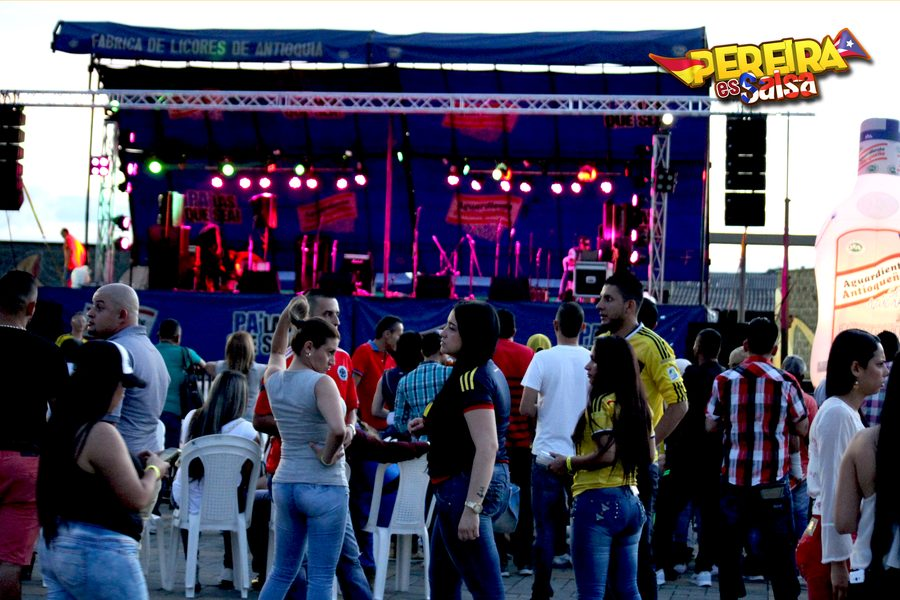
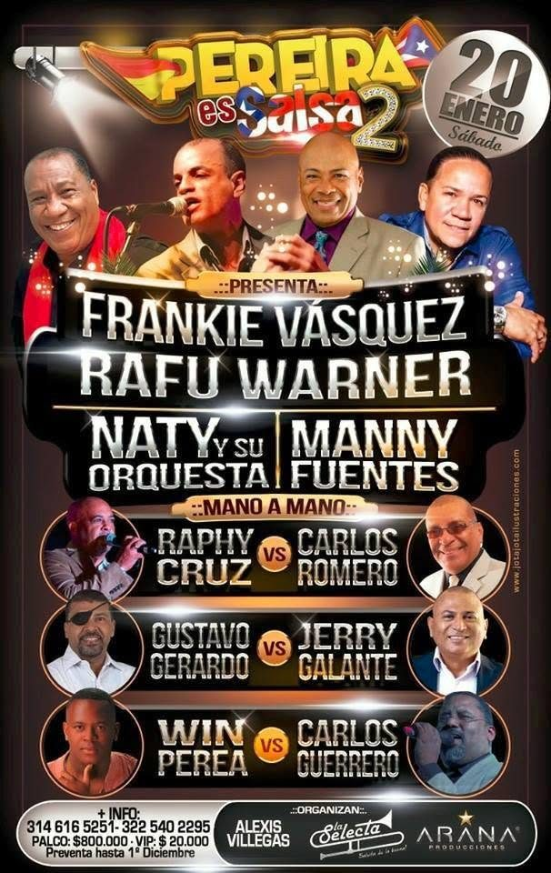
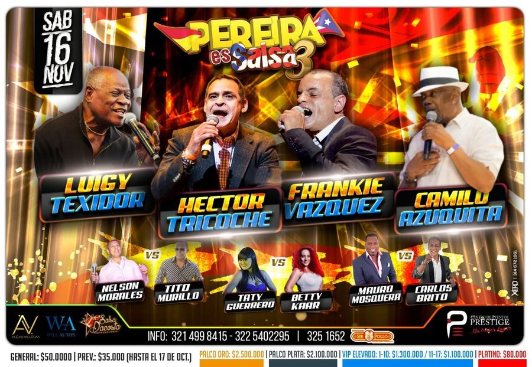
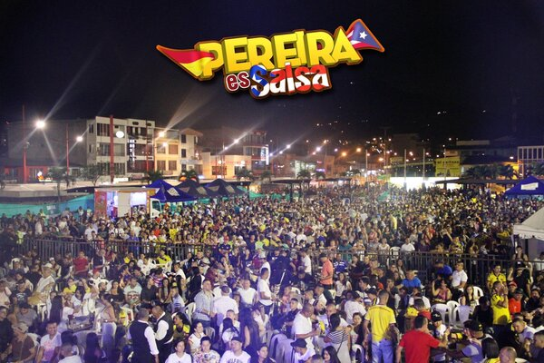
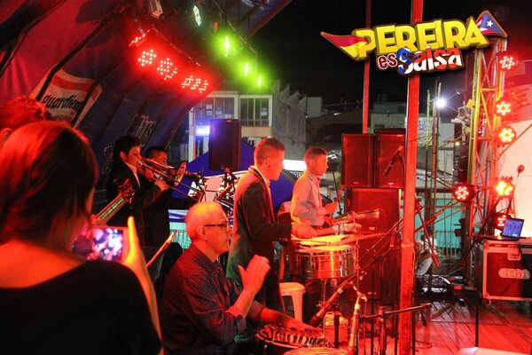
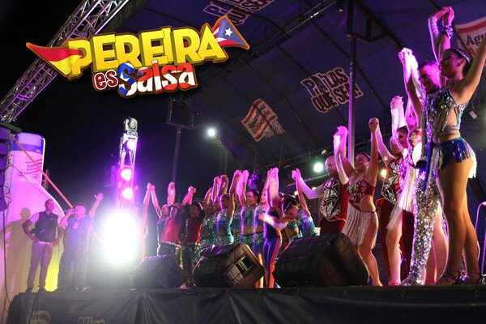
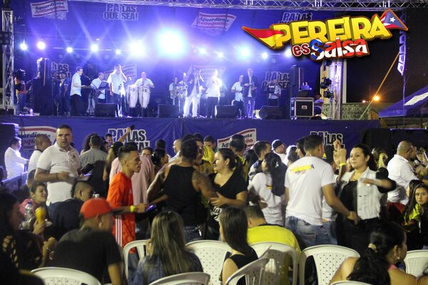
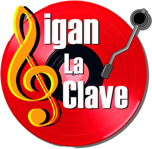
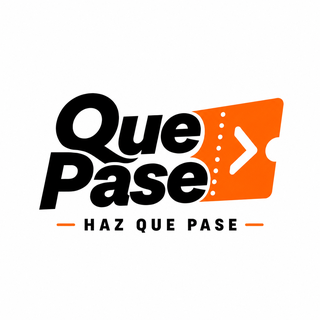
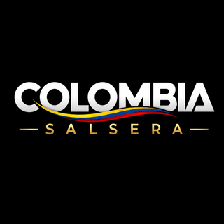

Edición I
16 de octubre de 2016
Más de 8.000 asistentes se reunieron en el Parque Guadalupe Zapata.
Pereira · Risaralda · Eje Cafetero
Agenda, escenarios, artistas y memoria viva de una ciudad que baila. Información local, clara y verificada.
Actualidad local
Estamos construyendo una cartelera confiable para encontrar planes salseros sin perder tiempo entre publicaciones dispersas.
Agenda verificada
No hay eventos verificados publicados todavía. Envía el tuyo o vuelve pronto.
Nuestra historia

Más de 8.000 asistentes se reunieron en el Parque Guadalupe Zapata.

Diez artistas en escena llevaron la experiencia a Expofuturo.

Una nueva noche de concierto reunió a la comunidad salsera en Ágata.
Archivo visual




Música, información y boletería

Sigan la ClaveRadio de salsa 24/7Visitar emisora ↗
QuePaseBoletería y eventos
Colombia SalseraActualidad nacional